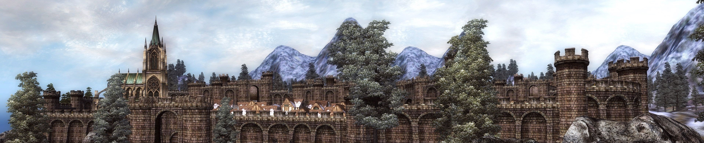

Set Gegenstände
Sets spielen in TESO eine ganz wichtige Rolle. Da sie aktiv am Charakter Spielverhalten beitragen. Sets sind essenziel um das Maximum aus ihm rauszuholen, ob sogenannter Schadensausteiler, Heiler oder Tanks. Sie alle tragen, an ihre Rolle angepasstes, Set.
Bei den Sets scrollen um alle zu sehen.

Sets (normal)
Normale Sets stellen dir immer 3 bis 5 Boni zur Verfügung. Während die dreier Sets den Charakter grundsätzlich nur auf statistischer Ebene verbessern, geben die fünfer Sets als fünften Bonus in den meisten Fällen einen besonderen Effekt. Wie beispielsweise einen für kurze Zeit beschworenen Begleiter. Die ersten vier Boni verbessern den Charakter jedoch ebenfalls nur auf statistischer Ebene.
Muttertränen
Mother´s Sorrow
Set Boni
(2 Gegenstände) Gewährt 1096 maximale Magicka
(3 Gegenstände) Gewährt 833 kritische Magietreffer
(4 Gegenstände) Gewährt 833 kritische Magietreffer
(5 Gegenstände) Gewährt 1924 kritische Magietreffer
Dornherz
Briarheart
Set Boni
(2 Gegenstände) Gewährt 833 kritische Waffentreffer
(3 Gegenstände) Gewährt 1096 maximale Ausdauer
(4 Gegenstände) Gewährt 833 kritische Waffentreffer
(5 Gegenstände) Wenn Ihr kritischen Schaden verursacht, besteht eine Chance von 25 %, dass Ihr Eure Waffenkraft 10 Sekunden lang um 450 erhöht. Solange der Effekt andauert, heilen Euch Eure kritischen Treffer um 378 Leben. Dieser Effekt kann einmal alle 15 Sekunden eintreten.
Gesetz von Julianos
Law of Julianos
Set Boni
(2 Gegenstände) Gewährt 833 kritische Magietreffer
(3 Gegenstände) Gewährt 1096 maximale Magicka
(4 Gegenstände) Gewährt 833 kritische Magietreffer
(5 Gegenstände) Gewährt 300 Magiekraft
Hundings Zorn
Hunding´s Rage
Set Boni
(2 Gegenstände) Gewährt 833 kritische Waffentreffer
(3 Gegenstände) Gewährt 1096 maximale Ausdauer
(4 Gegenstände) Gewährt 833 kritische Waffentreffer
(5 Gegenstände) Gewährt 300 Waffenkraft
Akolyth des Neuen Mondes
New Moon Acolyte
Set Boni
(2 Gegenstände) Gewährt 833 kritische Waffentreffer
(2 Gegenstände) Gewährt 833 kritische Magietreffer
(3 Gegenstände) Gewährt 129 Waffenkraft
(3 Gegenstände) Gewährt 129 Magiekraft
(4 Gegenstände) Gewährt 1487 Rüstungsdurchstoß
(4 Gegenstände) Gewährt 1487 Magiedurchdringung
(5 Gegenstände) Gewährt 481 Magie- und Waffenkraft.
Überwältigende Woge
Overwhelming Surge
Set Boni
(2 Gegenstände) Gewährt 1096 maximale Magicka
(3 Gegenstände) Gewährt 129 Magiekraft
(4 Gegenstände) Gewährt 129 Magiekraft
(5 Gegenstände) Verursacht Ihr Schaden mit einer Klassenfähigkeit, besteht eine Chance von 33 %, dass Ihr Euch 6 Sekunden lang mit einem Wirbel umgebt, der Feinden innerhalb von 8 Metern jede Sekunde 1175 Schockschaden zufügt. Ihr erhaltet 15 % des verursachten Schadens als Magicka zurück. Dieser Effekt kann einmal alle 6 Sekunden eintreten.
Tödlicher Stoß
Deadly Strike
Set Boni
(2 Gegenstände) Gewährt 129 Waffenkraft
(3 Gegenstände) Gewährt 833 kritische Waffentreffer
(4 Gegenstände) Gewährt 129 Waffenkraft
(5 Gegenstände) Erhöht den Schaden Eurer Fähigkeiten mit Schaden über Zeit und kanalisierte Fähigkeiten, die physischen Schaden, Blutungen, Gift- oder Seuchenschaden verursachen, um 20 %.
Hohlzahndurst
Hollowfang Thirst
Set Boni
(2 Gegenstände) Gewährt 833 kritische Magietreffer
(3 Gegenstände) Gewährt 1096 maximale Magicka
(4 Gegenstände) Gewährt 833 kritische Magietreffer
(5 Gegenstände) Erzielt Ihr einen kritischen Treffer oder eine kritische Heilung, so erscheint bei Eurem Ziel eine Kugel Hämoglobin. Nach 2 Sekunden explodiert diese und gewährt Verbündeten innerhalb von 6 Metern um die Kugel 9 Sekunden lang 3000 Magicka und kleinere Vitalität, was deren erhaltene Heilung um 8 % erhöht. Dieser Effekt kann einmal alle 9 Sekunden eintreten.
Nektropotenz
Necropotence
Set Boni
(2 Gegenstände) Gewährt 1096 maximale Magicka
(3 Gegenstände) Gewährt 1096 maximale Magicka
(4 Gegenstände) Gewährt 1096 maximale Magicka
(5 Gegenstände) Solange Ihr einen Begleiter aktiviert habt, ist Eure maximale Magicka um 3150 erhöht.
Ergebenheit zum falschen Gott
False God´s Devotion
Set Boni
(2 Gegenstände) Gewährt 833 kritische Magietreffer
(3 Gegenstände) Gewährt Euch dauerhaft kleinerer Schlächter, wodurch Eure Angriffe gegen NSCs in Verliesen, Prüfungen und Arenen 5 % zusätzlichen Schaden verursachen.
(4 Gegenstände) 833 kritische Magietreffer
(5 Gegenstände) Gewährt 129 Magiekraft
(5 Gegenstände) Verringert die Kosten Eurer Magickafähigkeiten um 8 %. Wenn ein Feind, dem Ihr vor Kurzem Schaden zugefügt habt, stirbt, erhaltet Ihr 2150 Magicka zurück und 8 Sekunden lang größere Schnelligkeit, wodurch Euer Lauftempo um 30 % erhöht wird.
Heiligtum
Sanctuary
Set Boni
(2 Gegenstände) Gewährt 1206 maximales Leben
(3 Gegenstände) Gewährt 4 % erhaltene Heilung
(4 Gegenstände) Gewährt 1096 maximale Magicka
(5 Gegenstände) Erhöht die von Euch und bis zu 11 Mitgliedern Eurer Gruppe erhaltene Heilung innerhalb von 10 Metern um 12 %.
Mantel von Siroria
Mantle of Siroria
Set Boni
(2 Gegenstände) Gewährt 129 Magiekraft
(3 Gegenstände) Gewährt Euch dauerhaft kleinerer Schlächter, wodurch Eure Angriffe gegen NSCs in Verliesen, Prüfungen und Arenen 5 % zusätzlichen Schaden verursachen.
(4 Gegenstände) Gewährt 1096 maximale Magicka
(5 Gegenstände) Fügt Ihr einem Feind mit einer Einzelzielangriff direkten Schaden zu, erschafft Ihr 10 Sekunden lang einen Feuerring unter Euch. Steht Ihr innerhalb des Rings, wird Euch 5 Sekunden lang eine Kumulation Sirorias Wohltat gewährt. Mit jeder Kumulation erhöht sich Eure Magiekraft um 30. Dieser Effekt kann einmal alle 10 Sekunden eintreten. Maximal 20 Kumulationen.
Trogvins Kriegstrupp
Tzogvin´s Warband
Set Boni
(2 Gegenstände) Gewährt 833 kritische Waffentreffer
(3 Gegenstände) Gewährt 833 kritische Waffentreffer
(4 Gegenstände) Gewährt 1487 Rüstungsdurchstoß
(5 Gegenstände) Verursacht Ihr kritischen Schaden, erhaltet Ihr Präzision, was Eure Chance auf kritische Waffentreffer 10 Sekunden lang um 129 erhöht. Dieser Effekt wirkt bis zu 10 mal kumulativ. Mit der maximalen Anzahl an Kumulationen erhaltet Ihr außerdem kleinere Kraft, was den Schaden Eurer kritischen Treffer um 10 % erhöht.
Blick der Mutter der Nacht
Night Mother´s Gaze
Set Boni
(2 Gegenstände) Gewährt 833 kritische Waffentreffer
(3 Gegenstände) Gewährt 129 Waffenkraft
(4 Gegenstände) Gewährt 833 kritische Waffentreffer
(5 Gegenstände) Wenn Ihr einen kritischen Treffer erzielt, belegt Ihr den Feind mit größere Fraktur, was dessen physische Resistenz 6 Sekunden lang um 5280 verringert.
Verletzender Magier
Scathing Mage
Set Boni
(2 Gegenstände) Gewährt 1096 maximale Magicka
(3 Gegenstände) Gewährt 833 kritische Magietreffer
(4 Gegenstände) Gewährt 833 kritische Magietreffer
(5 Gegenstände) Wenn Ihr direkten Schaden verursacht, besteht eine Chance von 20 %, Eure Magiekraft 5 Sekunden lang um 516 zu erhöhen. Dieser Effekt kann einmal alle 5 Sekunden eintreten.
Waffen von Relequen
Arms of Relequen
Set Boni
(2 Gegenstände) Gewährt 833 kritische Waffentreffer
(3 Gegenstände) Gewährt Euch dauerhaft kleinerer Schlächter, wodurch Eure Angriffe gegen NSCs in Verliesen, Prüfungen und Arenen 5 % zusätzlichen Schaden verursachen.
(4 Gegenstände) Gewährt 833 kritische Waffentreffer
(5 Gegenstände) Eure leichten und schweren Angriffe verfluchen Euer Ziel mit schädlichen Winden, die ihm 5 Sekunden lang jede Sekunde 246 Schaden zufügen. Maximal 20 Kumulationen.
Brandzauberweber
Burning Spellweave
Set Boni
(2 Gegenstände) Gewährt 1096 maximale Magicka
(3 Gegenstände) Gewährt 129 Magiekraft
(4 Gegenstände) Gewährt 833 kritische Magietreffer
(5 Gegenstände) Wenn Ihr mit einer Fähigkeit Flammenschaden verursacht, besteht eine Chance von 15 %, dass Ihr den Feind mit Brennen beeinträchtigt und Eure Magiekraft 8 Sekunden lang um 525 erhöht. Dieser Effekt kann einmal alle 12 Sekunden eintreten.
Ebenerzarsenal
Ebon Armory
Set Boni
(2 Gegenstände) Gewährt 1206 maximales Leben
(3 Gegenstände) Gewährt 1206 maximales Leben
(4 Gegenstände) Gewährt 4 % erhaltene Heilung
(5 Gegenstände) Erhöht das maximale Leben von Euch und bis zu 11 Gruppenmitgliedern innerhalb von 28 Metern um 1000.
Gewandung von Olorime
Vestment of Olorime
Set Boni
(2 Gegenstände) Gewährt 129 Magickaregeneration
(3 Gegenstände) Gewährt Euch dauerhaft kleinere Ägis, wodurch Ihr 5 % weniger Schaden durch NSCs in Verliesen, Prüfungen und Arenen erleidet.
(4 Gegenstände) Gewährt 129 Magickaregeneration
(5 Gegenstände) Fähigkeiten, die im Kampf am Boden einen Effekt hinterlassen, erschaffen 10 Sekunden lang einen Machtkreis. Steht Ihr innerhalb des Kreises, wird Euch und Euren Verbündeten größerer Mut gewährt, was Eure Magie- und Waffenkraft 30 Sekunden lang um 258 erhöht. Dieser Effekt kann einmal alle 10 Sekunden eintreten.
Torugs Pakt
Torug´s Pact
Set Boni
(2 Gegenstände) Gewährt 129 Magiekraft
(3 Gegenstände) Gewährt 1206 maximales Leben
(4 Gegenstände) Gewährt 1487 Rüstung
(5 Gegenstände) Verringert die Abklingzeit der Waffenverzauberung und verstärkt deren Effekt um 30 %. Verzauberungen mit daedrischem Schaden sind hiervon ausgenommen.
Garderobe des Wurms
The Worm´s Raiment
Set Boni
(2 Gegenstände) Gewährt 129 Magiekraft
(3 Gegenstände) Gewährt 1096 maximale Magicka
(4 Gegenstände) Gewährt 129 Magickaregeneration
(5 Gegenstände) Verringert die Kosten von Magicka-Fähigkeiten für Euch und bis zu 11 weitere Gruppenmitglieder innerhalb von 28 Metern um 4 %.
Rüstung der Verführung
Armor of the Seducer
Set Boni
(2 Gegenstände) Gewährt 129 Magickaregeneration
(3 Gegenstände) Gewährt 1096 maximale Magicka
(4 Gegenstände) Gewährt 129 Magickaregeneration
(5 Gegenstände) Verringert die Kosten Eurer Magicka-Fähigkeiten um 10 %.
Seuchendoktor
Plague Doctor
Set Boni
(2 Gegenstände) Gewährt 1206 maximales Leben
(3 Gegenstände) Gewährt 1206 maximales Leben
(4 Gegenstände) Gewährt 4 % erhaltene Heilung
(5 Gegenstände) Gewährt 3000 maximales Leben
Gewänder des Webers
Spinner´s Garments
Set Boni
(2 Gegenstände) Gewährt 1096 maximale Magicka
(3 Gegenstände) Gewährt 1096 maximale Magicka
(4 Gegenstände) Gewährt 129 Magiekraft
(5 Gegenstände) Gewährt 3450 Magiedurchdringung
Magiekraftheilung
Spell Power Cure
Set Boni
(2 Gegenstände) Gewährt 1096 maximale Magicka
(3 Gegenstände) Gewährt 1096 maximale Magicka
(4 Gegenstände) Gewährt 129 Magiekraft
(5 Gegenstände) Wenn Ihr Euch oder ein verbündetes Ziel heilt, das bereits 100 % Leben besitzt, besteht eine Chance von 50 %, 10 Sekunden lang größerer Mut zu gewähren, was die Magie- und Waffenkraft um 258 erhöht.
Alte Drachengarde
Ancient Dragonguard
Set Boni
(2 Gegenstände) Gewährt 1206 maximales Leben
(3 Gegenstände) Gewährt 129 Waffenkraft
(3 Gegenstände) Gewährt 129 Magiekraft
(4 Gegenstände) Gewährt 833 kritische Waffentreffer
(4 Gegenstände) Gewährt 833 kritische Magietreffer
(5 Gegenstände) Gewährt Euch 300 Magie- und Waffenkraft, solange Ihr mehr als 50 % Eures maximalen Lebens besitzt. Gewährt Euch 3460 physische Resistenz und Magieresistenz, solange Ihr weniger als 50 % Eures maximalen Lebens besitzt.
Titanenkinds Stärke
Titanborn Strength
Set Boni
(2 Gegenstände) Gewährt 1487 Rüstungsdurchstoß
(3 Gegenstände) Gewährt 129 Waffenkraft
(4 Gegenstände) Gewährt 1096 maximale Ausdauer
(5 Gegenstände) Gewährt 110 Waffenkraft und 1240 Rüstungsdurchstoß. Dieser Bonus verdoppelt sich auf 220 Waffenkraft und 2480 Rüstungsdurchstoß, wenn Euer Leben unter 75 % sinkt. Dieser Bonus vervierfacht sich auf 440 Waffenkraft und 4960 Rüstungsdurchstoß, wenn Euer Leben unter 50 % sinkt.
Brüllen von Alkosh
Roar of Alkosh
Set Boni
(2 Gegenstände) Gewährt 833 kritische Waffentreffer
(3 Gegenstände) Gewährt Euch dauerhaft kleinerer Schlächter, wodurch Eure Angriffe gegen NSCs in Verliesen, Prüfungen und Arenen 5 % zusätzlichen Schaden verursachen.
(4 Gegenstände) Gewährt 129 Waffenkraft
(5 Gegenstände) Wenn Ihr eine Synergie aktiviert, entsendet Ihr eine Schockwelle, die 2115 Schaden und danach 10 Sekunden lang insgesamt 15650 Schaden verursacht. Die physische Resistenz und Magieresistenz getroffener Feinde wird 10 Sekunden lang um 3010 verringert.
Magnus´ Gabe
Magnus´ Gift
Set Boni
(2 Gegenstände) Gewährt 1096 maximale Magicka
(3 Gegenstände) Gewährt 129 Magickaregeneration
(4 Gegenstände) Gewährt 129 Magiekraft
(5 Gegenstände) Wenn Ihr eine Magicka-Fähigkeit einsetzt, besteht eine Chance von 8 %, dass Ihr dies kostenlos tun könnt.
Leviathan
Leviathan
Set Boni
(2 Gegenstände) Gewährt 1096 maximale Ausdauer
(3 Gegenstände) Gewährt 833 kritische Waffentreffer
(4 Gegenstände) Gewährt 833 kritische Waffentreffer
(5 Gegenstände) Gewährt 1924 kritische Waffentreffer
Monstersets
Schon bei den normalen Sets sind die fünfer Boni schon recht stark. Doch im Vergleich zu den Monstersets, werden diese ganz klar in den Schatten gestellt. Monstersets sind jedoch nur für den Helm wie auch Schulterkappen ausrüstbar. Es gibt kein anderes Rüstungsteil bei Monstersets. Der Erhalt des Kopf-Teiles wird bei den Sets angegeben. Die Schulter-Teile sind aber nur bei den Unerschrockenen zu erhalten die sich in jeder der drei Allianzen in der Hauptstadt befindet.
Balorgh
Balorgh
Set Boni
(1 Gegenstand) Gewährt 129 Waffenkraft
(1 Gegenstand) Gewährt 129 Magiekraft
(2 Gegenstände) Wenn Ihr eine ultimative Fähigkeit nutzt, wird Euch 12 Sekunden lang Magie- und Waffenkraft in Höhe der insgesamt verbrauchten ultimativen Kraft und das 23-fachen dieses Werts als physische Resistenz und Magieresistenz gewährt.
Bebenschuppe
Tremorscale
Set Boni
(1 Gegenstand) Gewährt 1096 maximale Ausdauer
(2 Gegenstände) Wenn Ihr einen Gegner verspottet, bricht nach 1 Sekunde ein Dünenbrecher aus dem Boden unter ihm hervor, der an allen Feinden innerhalb von 4 Metern 7380 Schaden verursacht und deren physische Resistenz 8 Sekunden lang um 2395 verringert. Dieser Effekt kann einmal alle 8 Sekunden auftreten.
Blutbrut
Bloodspawn
Set Boni
(1 Gegenstand) Gewährt 129 Ausdauerregeneration
(2 Gegenstände) Wenn Ihr Schaden erleidet, besteht eine Chance von 6%, 8 ultimative Kraft zu erhalten und Eure physische Resistenz und Magieresistenz 5 Sekunden lang um 3300 zu erhöhen. Dieser Effekt kann nur einmal alle 5 Sekunden eintreten.
Eisherz
Iceheart
Set Boni
(1 Gegenstand) Gewährt 833 kritische Magietreffer
(2 Gegenstände) Wenn Ihr kritischen Schaden verursacht, besteht eine Chance von 20 %, dass Ihr einen Schadenschild erhaltet, der 6 Sekunden lang 5000 absorbiert. Solange der Schadenschild aufrechterhalten wird, verursacht Ihr jede Sekunde 600 Frostschaden an allen Feinden innerhalb von 5 Metern um Euch herum. Dieser Effekt kann einmal alle 6 Sekunden auftreten.
Erdbluter
Earhgore
Set Boni
(1 Gegenstand) Gewährt 4 % gewirkte Heilung
(2 Gegenstände) Heilt Ihr Euch oder einen Verbündeten mit weniger als 50 % Leben, beschwört Ihr ein Becken voll seinen Lebensdurst löschenden Blutes unter ihm herauf, das sofort alle vom Feind platzierten Effekte entfernt und den Verbündeten mit dem wenigsten Leben 10 Sekunden lang in Höhe von 29700 Leben heilt. Dieser Effekt kann nur einmal alle 20 Sekunden eintreten.
Geißelernter
Scourge Harvester
Set Boni
(1 Gegenstand) Gewährt 1206 maximales Leben
(2 Gegenstände) Wenn Ihr Schaden erleidet, erzeugt Ihr mit einer Chance von 10 % einen Strahl, der 4 Sekunden lang 6858 Leben vom Angreifer stiehlt. Während der Strahl aufrecht erhalten wird, erhaltet Ihr größere Vitalität, wodurch sich Eure erhaltene Heilung um 30 % erhöht. Der Strahl wird unterbrochen, wenn sich das Ziel weiter als 8 Meter entfernt. Dieser Effekt kann einmal alle 6 Sekunden eintreten.
Grothdarr
Grothdarr
Set Boni
(1 Gegenstand) Gewährt 1096 maximale Magicka
(2 Gegenstände) Wenn Ihr Schaden verursacht, besteht eine Chance von 10 %, Lavabecken zu erschaffen, die Euch umwirbeln und allen Feinden im Umkreis von 8 Metern 5 Sekunden lang jede Sekunde 2034 Flammenschaden zufügen. Dieser Effekt kann einmal alle 10 Sekunden eintreten.
Grundwulf
Grundwulf
Set Boni
(1 Gegenstand) Gewährt 833 kritische Waffentreffer
(1 Gegenstand) Gewährt 833 kritische Magietreffer
(2 Gegenstände) Wenn Ihr kritisch Schaden verursacht, stellt Ihr 700 Magicka oder Ausdauer wieder her, je nach dem, welches Maximum höher ist. Ihr erhaltet zudem 350 der jeweils anderen Ressource. Dieser Effekt kann einmal alle 5 Sekunden eintreten.
Hochwärter
Lord Warden
Set Boni
(1 Gegenstand) Gewährt 1487 Rüstung
(2 Gegenstände) Wenn Ihr Schaden erleidet, besteht eine Chance von 50 %, 10 Sekunden lang eine Schattenkugel zu beschwören, die Eure physische Resistenz und Magieresistenz und die Eurer Verbündeten innerhalb von 8 Metern um 3180 erhöht. Dieser Effekt kann nur einmal alle 10 Sekunden eintreten.
Ilambris
Ilambris
Set Boni
(1 Gegenstand) Gewährt 1096 maximale Magicka
(2 Gegenstände) Wenn Ihr Flammen- oder Schockschaden verursacht, besteht eine Chance von 33 %, dass Ihr einen Meteorregen mit dieser Schadensart beschwört, der 5 Sekunden lang an allen Feinden innerhalb von 4 Metern jede Sekunde 2276 Schaden verursacht. Dieser Effekt kann einmal alle 8 Sekunden auftreten.
Antiquitäten
Die Antiquitäten sind erst seit dem Greymoor DLC im Spiel und sind wahrhaftig mythische Gegenstände. Sie heben sich mit ihren starken Effekten wie auch mit dem Fakt, dass es Sets mit einem einzigen Bonus sind, von den Anderen ab. Jedoch sind sie auch dem entsprechend sehr schwer sie zu erhalten.
Malacaths Band der Brutalität
Set Boni
(1 Gegenstand) Erhöht Euren verursachten Schaden um 25%. Ihr könnt keinen kritischen Schaden verursachen.
Thrassische Würger
Set Boni
(1 Gegenstand) Tötet Ihr einen Feind, wird eine von maximal 20 anhaltenden Komulationen von Ruf des Krecken gewährt. Jede Komulation erhöht Eure Magiekraft um 150, jedoch auch Euren erlittenen Schaden um 2%.
Ring der wilden Jagt
Set Boni
(1 Gegenstand) Erhöht Euer Lauftempo im Kampf um 15% und außerhalb des Kampfes um 45%.
Torques der Klangkonstanz
Set Boni
(1 Gegenstand) Habt Ihr weniger als 50% Eurer Ausdauer, wird Eure Magickaregeneration um 450 erhöht. Habt Ihr weniger als 50% Eurer Magicka, wird Eure Ausdauerregeneration um 450 erhöht.
Umarmung des Blutfürsten
Set Boni
(1 Gegenstand) Verursacht Ihr Schaden mit einem Wuchtangriff, wird ein Feind mit einem anhaltenden, nicht zu entfernenden Blutfluch gleichzeitig geben. Verursacht Ihr weiteren Wuchtschaden, geht der Blutfluch über. Blockt Ihr Angriffe von einem mit Blutfluch belegten Feind ab, wird bei Euch 1535 Magicka wiederhergestellt. Dieser Effekt kann einmal jede Sekunde eintreten.